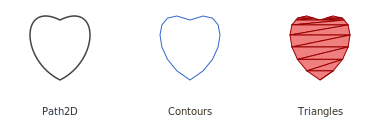
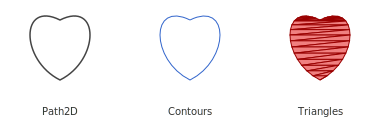
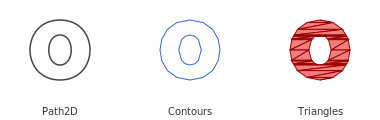
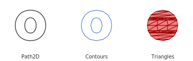
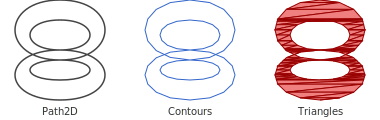
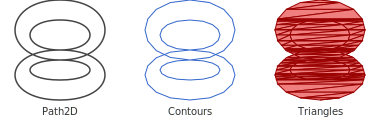

Tessellation
Xui.Runtime.Software provides a full software rendering backend that can rasterize vector paths using a scanline-based tessellator.
Overview
Vector paths (Xui.Core.Canvas.Path2D) can be tessellated into triangle polygons for software or GPU-based rendering.
The tessellation pipeline proceeds through these stages:
Flattening
Curves (e.g. Bézier, arcs) are approximated with straight-line segments based on a flatness threshold.Contours
Segments are grouped into closed loops, and winding direction is determined for fill rule evaluation.Scanline Sweep
A vertical scanline algorithm partitions the shape into spans using either even-odd or non-zero winding rules.Triangulation
The spans are tessellated into individual triangles for rasterization.
📈 Pipeline Visualization
The image below shows a sample Path2D progressing through all stages:

💖 Example: Heart Shape Tessellation
var path = new Path2D();
path.MoveTo(new Point(60, 20));
path.CurveTo(new Point(100, 0), new Point(100, 60), new Point(60, 80));
path.CurveTo(new Point(20, 60), new Point(20, 0), new Point(60, 20));
path.ClosePath();
// Perform tessellation using even-odd fill rule
var result = PathTesselator.Fill(path, FillRule.EvenOdd);
// Access the generated triangle polygons
foreach (var triangle in result.Polygons)
{
// Use triangle.A, triangle.B, triangle.C
}
🎯 Curve Flattening Precision
The tessellator uses curve flattening to convert Bézier paths into line segments. You can control the precision with a flatness parameter:
var tess = PathTesselator.Fill(path, FillRule.EvenOdd, flatness: 0.25f);

🟢 Example: "O" Shape with Hole (Even-Odd Fill)
This example demonstrates how the tessellator handles holes using the even-odd fill rule. The path includes two closed loops: an outer circle and an inner circle forming the hole.
var path = new Path2D();
// Outer circle
path.MoveTo(new Point(60, 20));
path.CurveTo(new Point(100, 20), new Point(100, 80), new Point(60, 80));
path.CurveTo(new Point(20, 80), new Point(20, 20), new Point(60, 20));
path.ClosePath();
// Inner circle (hole)
path.MoveTo(new Point(60, 35));
path.CurveTo(new Point(75, 35), new Point(75, 65), new Point(60, 65));
path.CurveTo(new Point(45, 65), new Point(45, 35), new Point(60, 35));
path.ClosePath();
var result = PathTesselator.Fill(path, FillRule.EvenOdd);
foreach (var triangle in result.Polygons)
{
// triangle.A, triangle.B, triangle.C
}

🕳️ Holes and the Non-Zero Fill Rule
When using the non-zero fill rule, holes are only excluded if their winding direction cancels out the outer contour. In the example below, both the outer and inner circles are wound in the same direction, so the hole is not excluded — the entire shape is filled.

To produce holes reliably, the even-odd fill rule is often preferred for paths with overlapping or nested contours.
∞ Example: Figure-8 with Self-Intersecting Path
This shape is a single continuous path that loops back on itself to form a twisted “8” structure — like a flattened Möbius strip. The fill rule affects whether the middle crossing cancels or doubles the fill.
- Even-Odd creates two distinct lobes with a canceling center.
- Non-Zero fills the entire structure due to cumulative winding.
Even-Odd

Non-Zero

✅ Summary
The Xui tessellation system provides a precise and flexible pipeline for flattening, contour analysis, fill rule evaluation, and triangle generation. This enables fast and reliable vector shape rendering in both software and hardware pipelines, with support for edge cases like self-intersecting paths and holes.
Use PathTesselator.Fill(...) with the fill rule that best matches your layout or rendering intent — and enjoy pixel-perfect cross-platform rendering with Xui!